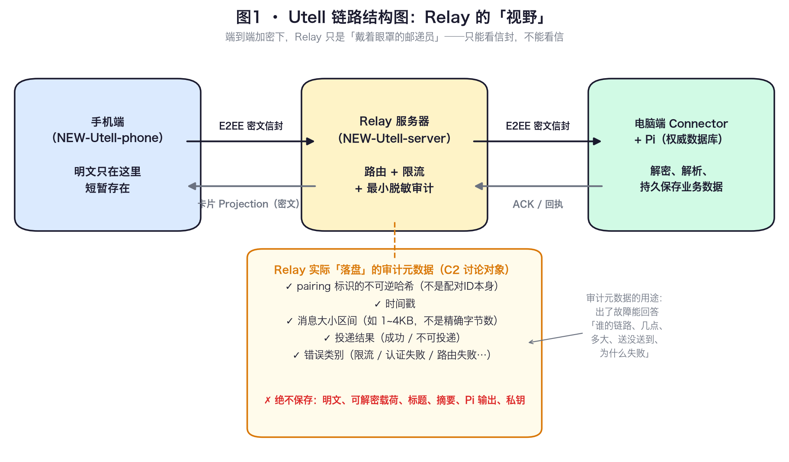
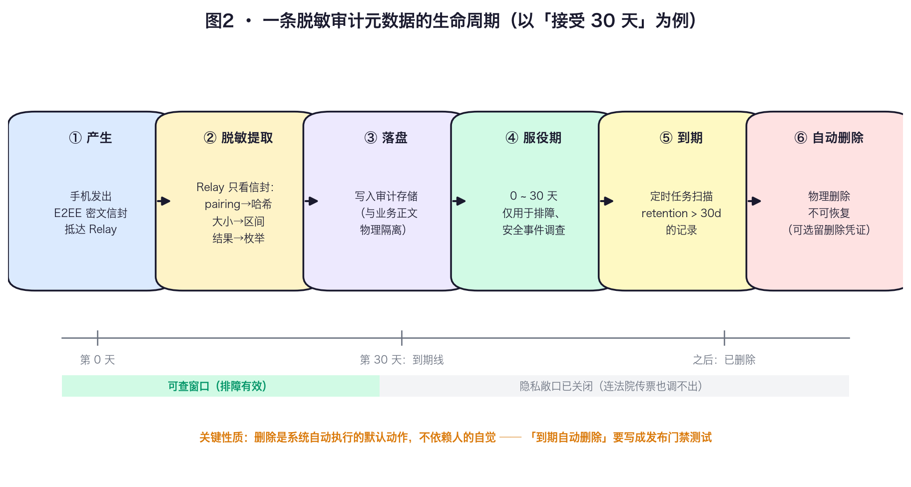
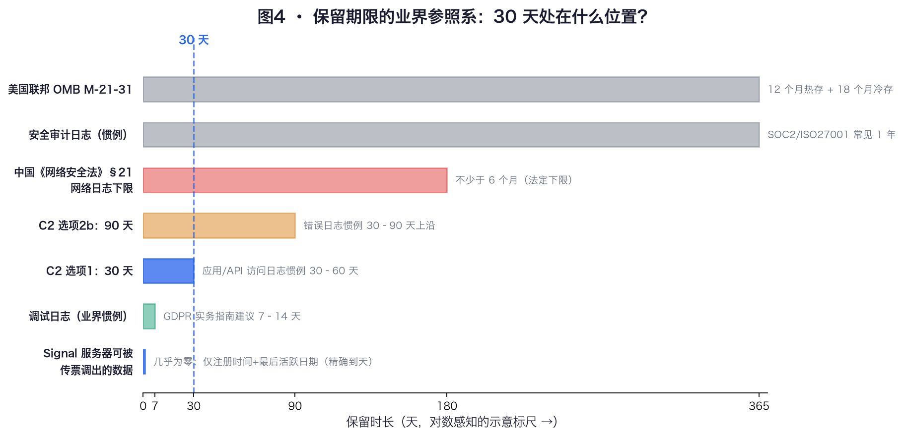
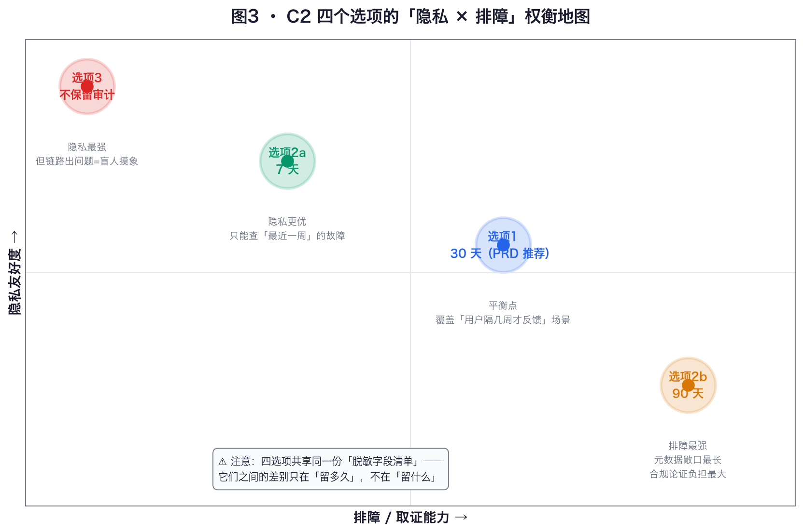

对应 PRD：FR-008 Relay 服务 · 7.2 Relay 保留规则 · 9.2 发布验收清单（隐私合规）｜需求确认台账条目：C2（待确认）
Utell 的隐私架构有一条铁律（PRD 7.3）：业务内容端到端加密，Relay 服务器永远读不到用户写了什么。但 Relay 作为消息的中转站，又必须回答一个工程上绕不开的问题——当用户抱怨「我发的日志没同步到电脑」时，工程师拿什么去查？
答案就是「审计元数据」：Relay 不记内容，但记「信封外面能看到的东西」。C2 这个决策点要回答的是：这些痕迹留多久？PRD 7.2 的草案写的是「最长保留 30 天，待确认」，C2 就是要你把这个「待确认」变成「已确认」。

三个刚性需求决定了审计元数据必须存在（区别只在留多久）：
先立两个贯穿全章的概念（后文不再重复解释）：
不记录 → 遮蔽 → 哈希/假名化 → 加密，能不记就不记，必须记就变形。HMAC-SHA256(pairing_id, server_secret) 之类的单向哈希后，Relay 仍能把同一条链路的多次事件关联起来（同一哈希 = 同一链路），但拿到数据库的人无法反推出 pairing_id，更无法关联到真实设备。SIZE_1_4KB），不是精确字节数。为什么不能存精确值？因为密文长度与明文长度强相关——精确长度长期累积，配合时间戳可能泄露行为模式（「每天 23:00 有一条 ~2KB 消息」≈ 每晚写一条短日记）。区间化是有意的信息有损压缩：够判断「是不是异常大包触发了限流」，不够做内容画像。ROUTE_NOT_DELIVERED）等。这是回答「送没送到」的唯一字段，也是 AC-019 的用户体验配套——手机端收到「不可投递」回执后不能假装已发送。它本身不含任何内容信息，敏感度最低。单个看，每个字段都无害；真正的隐私工程问题永远是组合后能否重新识别个人。对这套字段清单做一遍攻击推演：
| 攻击者拿到 30 天审计库后能推出什么？ | 推不出什么？ |
|---|---|
| 某条链路（哈希）的活跃规律：每天大约几条、什么时段、消息量级 | 链路背后是谁（哈希不可逆） |
| 全站总量与错误分布（运营大盘） | 任何一条消息的内容、标题、摘要 |
| 某链路是否经历过故障 | 故障消息里写了什么 |

关键工程性质：删除必须是默认动作。GDPR 实务界的共识（EDPB 2024/2025 执法报告）是：监管机构把「没有成文保留时间表」和「声称会删但没有自动删除机制」都视为违规。落到 Utell 的实现上，这意味着 Relay 需要一个定时清除任务，并且「到期数据确实被物理删除」要写成自动化测试，进发布门禁。
| 力量 | 方向 | 依据 |
|---|---|---|
| 排障与取证 | 越长越好 | 用户反馈有滞后性——「上周三好像丢了一条」这类报告，7 天的窗口根本盖不住。安全事件的发现滞后在业界以「月」计。 |
| 数据最小化原则 | 越短越好 | GDPR 第 5(1)(e) 条「存储限制」、中国《个人信息保护法》第 19 条「保存期限应为实现处理目的所必要的最短时间」——两大法域用的是同一句话：必要即删。 |
| 法定留存下限 | 某些场景不许太短 | 中国《网络安全法》第 21 条要求网络运营者留存相关网络日志不少于六个月。这与「30 天」存在潜在冲突，见下方风险框。 |


| 选项 | 排障/取证能力 | 隐私敞口 | 合规姿态 | 致命短板 |
|---|---|---|---|---|
| ① 30 天 （PRD 推荐） |
覆盖「用户隔一两周才反馈」的真实节奏；月度错误模式可分析 | 哈希+时间戳组合敞口开 30 天 | 落在 GDPR 实务惯例区间；论证最容易写 | 可能不满足中国《网络安全法》6 个月日志下限（待法务裁决，见 3.2） |
| ②a 7 天 | 只能查「最近一周」；跨周反馈基本抓瞎 | 敞口最短（除不保留外） | 论证好写，但与 PRD 8.1 可观测性 P0 要求有张力 | 用户「上周丢了一条」的典型投诉场景直接无解，客服成本转嫁给人工复现 |
| ②b 90 天 | 季度级模式分析；慢速攻击可追踪 | 敞口最长，时间序列足够画出行为习惯画像 | 需要书面论证「为什么必要」；PIPL 最短必要原则下负担最重 | 对一个「个人日记」产品，90 天的行为时间线超出排障的真实需要——多出来的 60 天买到的主要是心理安慰 |
| ③ 不保留 （只留实时日志） |
接近归零：只能看「现在正在发生的」 | 零敞口，隐私叙事最漂亮 | 反而难过审——PRD 9.2 要求「脱敏日志检查」和安全事件取证，无存档则无法自证 | 首发阶段（内部测试用户、每阶段观察 7 天的灰度期）恰恰是故障最密集、最需要回看的时期；此时自废排障能力，违背 PRD 9.1 的灰度发布设计 |
如果法务确认 6 个月条款适用且无法拆分，选项退化为「审计元数据 30 天 + 法定网络安全日志 180 天」的双层结构——这并不推翻本分析的结论，只是把合规下限那部分挪出 C2 的范围。
Utell 的 Relay 是端到端加密链路里「戴眼罩的邮递员」，唯一允许落盘的是五个脱敏审计字段（pairing 哈希、时间戳、大小区间、投递结果、错误类别）——它们可关联、不可指认，属于假名化而非匿名化。C2 要定的不是「记不记」（排障、安全取证、合规自证都要求记），而是「记多久」。期限由三股力量拉扯：排障滞后（要长）、最小必要原则（要短）、法定下限（特定场景不许太短）。30 天落在 GDPR 实务惯例的应用日志区间，能覆盖灰度期用户反馈的滞后分布，是四选项中隐私与排障的平衡点——唯一悬而未决的是中国《网络安全法》6 个月日志条款的适用性，需法务裁决。
项目内：PRD（FR-008 / 7.2 / 8.1 / 8.3 / 9.2）·《架构基线》·《06-安全隐私与数据留存规范》·《需求确认台账》C2 条目
业界与法规： OWASP Logging Cheat Sheet · EDPB 2024 执法报告 · GDPR Log Management 实务指南（Last9） · NIST SP 800-92 日志管理指南 · Signal 传票回应公开页 · PrivacyGuides 论坛：Signal 元数据讨论 · 《中华人民共和国个人信息保护法》第 19 条 · 《中华人民共和国网络安全法》第 21 条